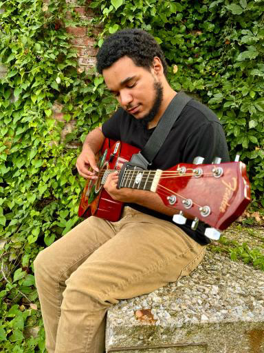

Tell me about yourself!
A: My name is Dame. I play guitar, write songs, and make content around music. I just graduated high school in 2024, and I’m now studying Psychology in college.
How did you first get into guitar?
A: I picked it up coming up on a year ago. I didn’t expect to love it so much, but I really did. I think I’ve gotten pretty decent, and now I own six guitars and I keep adding more.
What kind of music inspires you the most?
A: I do rap from time to time and I’m inspired by NF for that. When it comes to guitar and singing songs, Powfu is a big inspiration for me.
What role does songwriting play in your life?
A: I do it to portray my emotions and to try and make other people feel seen.

How does making content tie into your music?
A: Content gives me a way to share the process, not just polished songs but little riffs, ideas, and my personality. It makes me feel closer to people who watch.
You just graduated high school in 2024. how did that feel?
A: Honestly, it was exciting. I felt proud, but at the same time it felt like I was already looking ahead at what’s next.
Why did you choose Psychology in college?
A: I want other people to feel seen, because I know what it’s like to feel invisible. I’ve always liked helping people, and Psychology felt like the best way to do that.

What are some of your goals moving forward?
A: I’d love to release an album someday and also help people through psychology, maybe as a counselor. I want both paths to overlap, using music and psychology to help people feel understood.
What do you enjoy most about creating?
A: Being able to know that I helped someone if they related to my song.
If people remember one thing about you, what would you want it to be?
A: That I cared about making people feel heard, valued, and not alone.